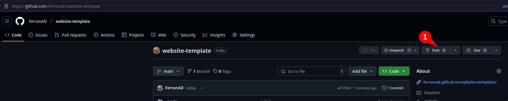
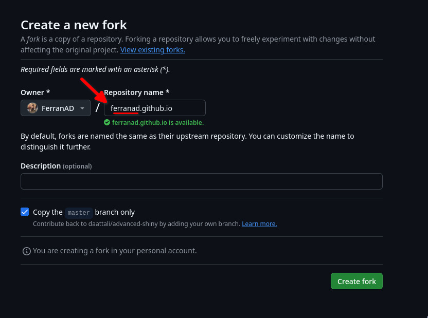
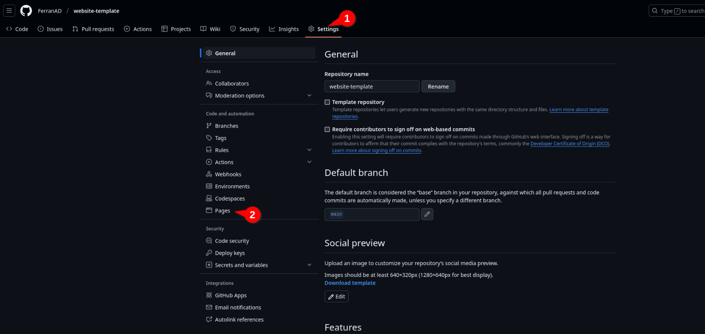
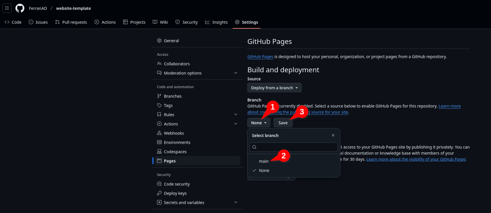
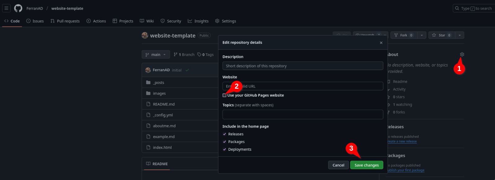
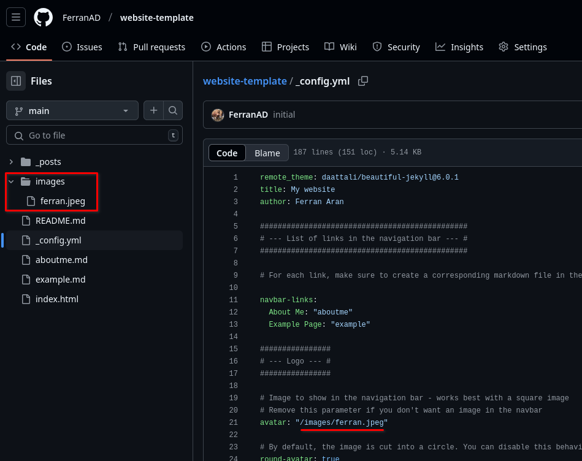

Laboratori 6: Web personal amb Jekyll i GitHub Pages
Objectius
Aquest laboratori pràctic té com a objectiu mostrar-te com crear un lloc web personal utilitzant Jekyll i GitHub Pages de manera senzilla i ràpida. Al final d’aquest laboratori, hauràs creat un lloc web personalitzat on podràs compartir informació sobre tu mateix, els teus interessos i qualsevol altra cosa que vulguis.
Introducció
GitHub Pages amaga la complexitat de configurar un servidor web i et permet allotjar un lloc web de manera gratuïta. Aquesta eina et permetrà allotjar llocs web estàtics directament des del teu repositori de GitHub. Tu ets responsable de crear el lloc web i de pujar-lo al teu repositori, i GitHub s’encarrega de la resta.
Utilitzarem una plantilla de lloc web creada per Dean Attali, les seves instruccions sobre com utilitzar la plantilla es troben aquí, però no et preocupis per això, utilitzarem una simplificació per a fer les coses més fàcils.
Prerequisits
- Compte de GitHub (crea’n un a https://github.com si no en tens un)
Eines
- Jekyll (un generador de llocs estàtics) - https://jekyllrb.com
- GitHub Pages (un servei d’allotjament de llocs estàtics) - https://pages.github.com
Tasca 1: Configuració del teu lloc web personal
Fes un fork de https://github.com/ferranad/website-template al teu compte de GitHub fent clic al botó “Fork” a la part superior dreta d’aquesta pàgina.

Canvia el nom del repositori a
username.github.io, onusernameés el teu nom d’usuari de GitHub.
Ves a la configuració del repositori i troba la secció GitHub Pages.

Habilita GitHub Pages seleccionant la branca
maincom a origen. Fes clic al botó “Save” i torna a la pàgina principal del teu repositori.
Espera un parell de minuts fins que el teu lloc web es desplegui. Quan el desplegament s’hagi completat, veuràs una marca verda al costat del teu darrer commit. Veuràs un punt taronja mentre el desplegament està en curs (intenta actualitzar la pàgina si no veus la marca verda després d’uns minuts).
<div style=“display: flex; justify-content: center; gap: 10px;”> <img src=“figures/pages/ci-waiting.png” width=“35%”> <img src=“figures/pages/ci-done.png” width=“35%”> </div>
Opcionalment, pots editar la descripció del repositori perquè contingui l’URL del teu lloc web. Això et facilitarà a tu i als altres l’accés al teu lloc web des de la pàgina del repositori de GitHub.

Prova el teu lloc web visitant
https://username.github.ioal teu navegador web (substitueixusernamepel teu nom d’usuari de GitHub). Notaràs que el lloc web ja està ple de contingut d’exemple.
Tasca 2: Personalització del teu lloc web personal
Edita el fitxer
_config.ymlper personalitzar el teu lloc web. Pots utilitzar la interfície web de GitHub per editar el fitxer directament, tal com es mostra al vídeo següent. Un cop hagis confirmat els canvis a la branca principal, el desplegament del lloc web s’activarà automàticament de nou i en un parell de minuts tindràs el teu lloc web actualitzat. Nota
NotaEn lloc d’editar el fitxer utilitzant la interfície web de GitHub, pots clonar el repositori a la teva màquina local i editar el fitxer amb un editor de text si et sents més còmode.
Edita el fitxer
aboutme.mdper afegir la teva informació personal, sent lliure d’escriure el que vulguis. Repeteix el mateix procés que a l’apartat anterior, però ara editant el fitxeraboutme.md.Canvia la imatge de l’avatar editant
_config.ymli reemplaçant la ruta. Observa que és només una cadena amb la ruta a un fitxer present al repositori, en aquest cas, el fitxerimages/ferran.jpeg. Pots pujar qualsevol imatge que vulguis al repositori navegant al directoriimagesi fent clic al botó “Add file -> Upload files”. Si, per exemple, has pujat un fitxer anomenatmyavatar.jpg, hauries de canviar la ruta a_config.ymlaimages/myavatar.jpg. Si no vols utilitzar una imatge d’avatar, pots eliminar la líniaavatar: "/images/ferran.jpegdel fitxer_config.yml.
Tasca 3: Escriptura d’una entrada de blog
Ara que tenim el lloc web a punt, escrivim una entrada de blog. Potser ja has notat que a la pàgina d’inici del lloc web hi ha una publicació de blog anomenada Sample blog post... en la qual pots fer clic per llegir-la completament. Aquesta és una publicació de blog de plantilla que pots utilitzar per aprendre les diferents sintaxis i estils que pots fer servir per escriure la teva pròpia publicació. Aquest fitxer es troba a _posts/2020-02-26-example-post.md. Sempre pots consultar aquest fitxer per veure com escriure una publicació de blog. En cas que no vulguis que es mostri al teu lloc web, només has d’eliminar-lo i consultar el que hi ha al repositori que has fet un fork.
Per escriure una nova entrada de blog, només has de crear un nou fitxer dins del directori _posts amb el següent format de nom: YYYY-MM-DD-títol.md. Si no segueixes aquest format, la publicació de blog no es mostrarà al teu lloc web. Pots crear un nou fitxer navegant al directori _posts i fent clic al botó “Add file -> Create a new file”. Ara que ja sabem com crear una nova publicació de blog, escrivim-ne una!